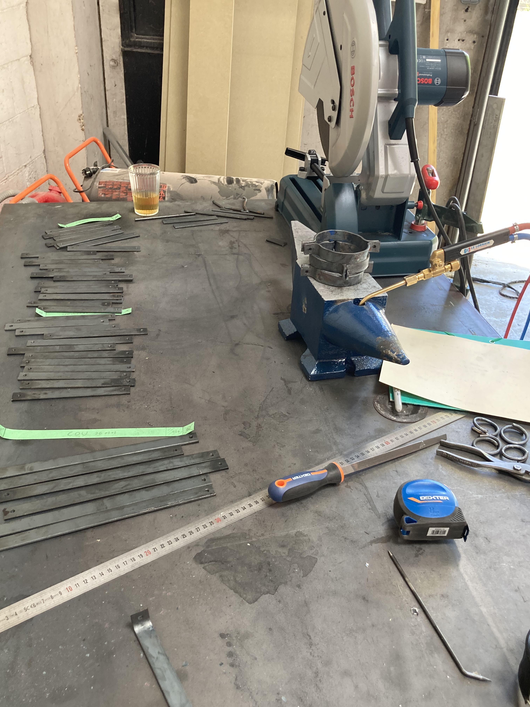
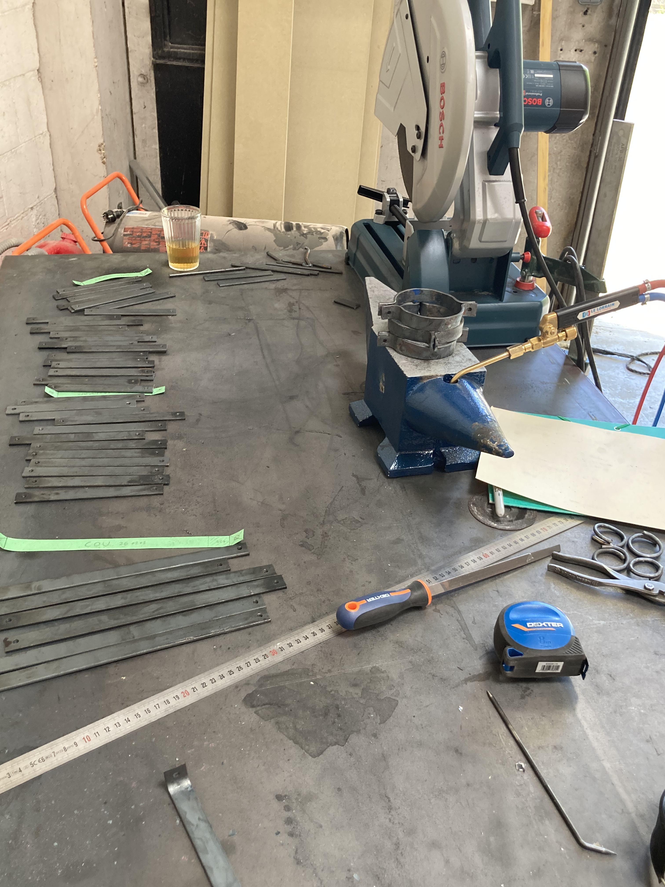
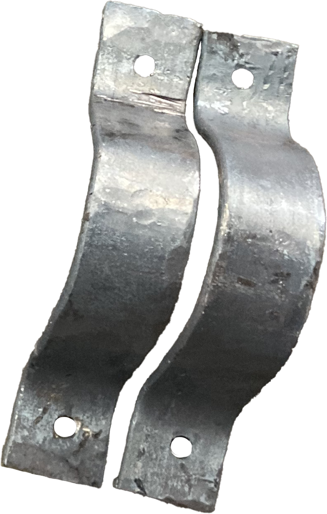
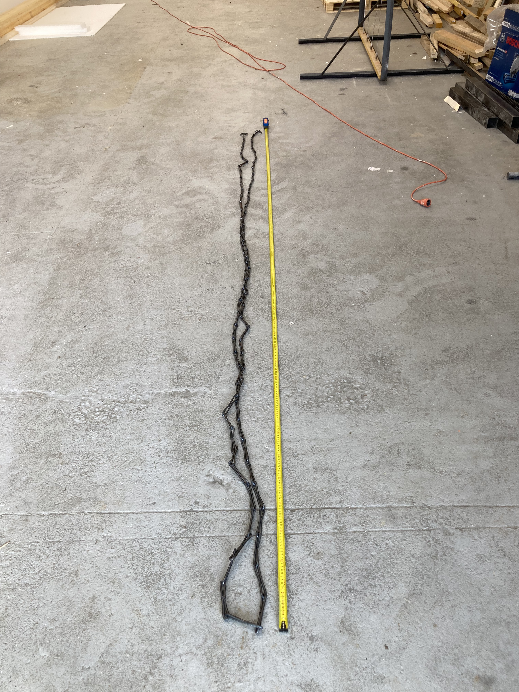
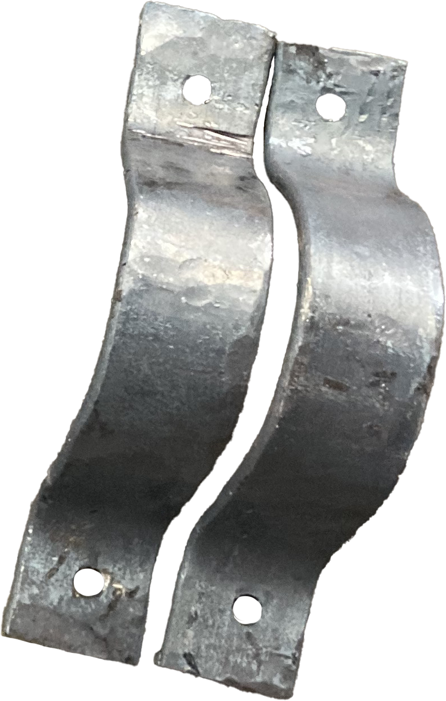
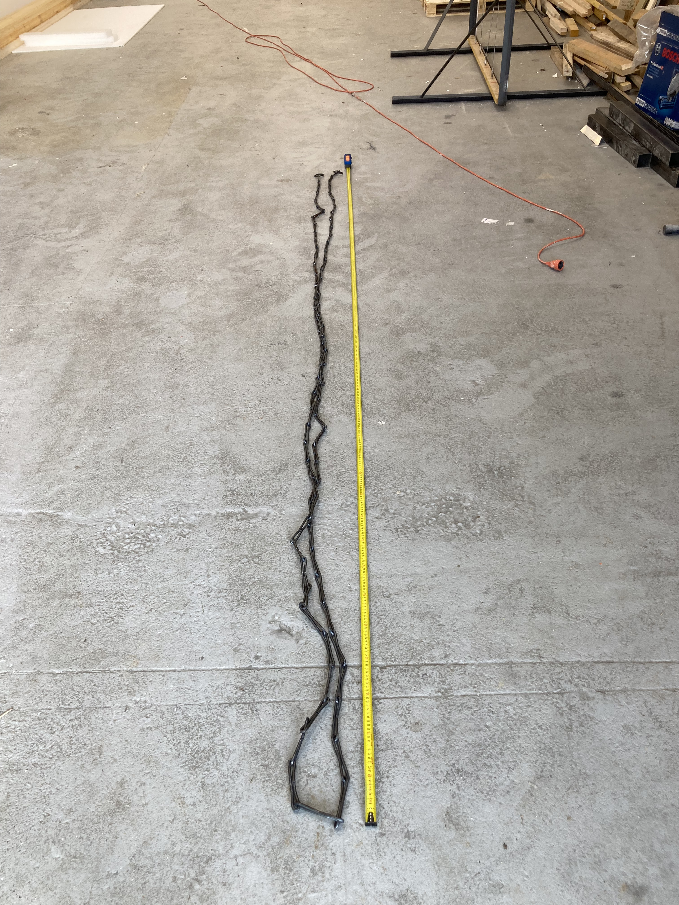

Internship at Saint Chaffray, May & June 2024 :
I was integrated into the team working on the upcoming permanent exhibition scheduled for
2026 at the Door of No Return Memorial in Ouidah, Bénin.
The exhibit will be located at the exact site from which the enslaved people departed from the
African continent to the Americas. It will take the form of a life-size slave ship dating from 1850.
As such, sculptures depict enslaved individuals (men, women, children alike) piled up and
chained within the cramped, suffocating hold of the ship.
I was tasked with experimenting and developing an internally applicable method for
producing historically accurate 19th-century shackles and chains, without the use of a forge or
specialized equipment.
All accessories must be easily removable for maintenance purposes; therefore, “fake rivets” are
used on the locking side of the shackle, as the most common method for securing this type of
shackle was hot riveting.
During my time there, I also learned sculpture on polystyrene and resin lamination, as well as
other decor-oriented techniques.


 



 


